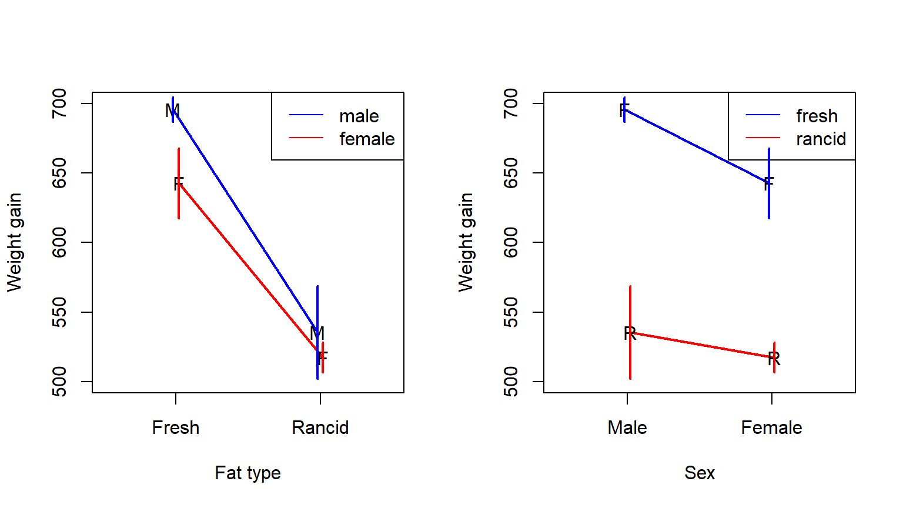
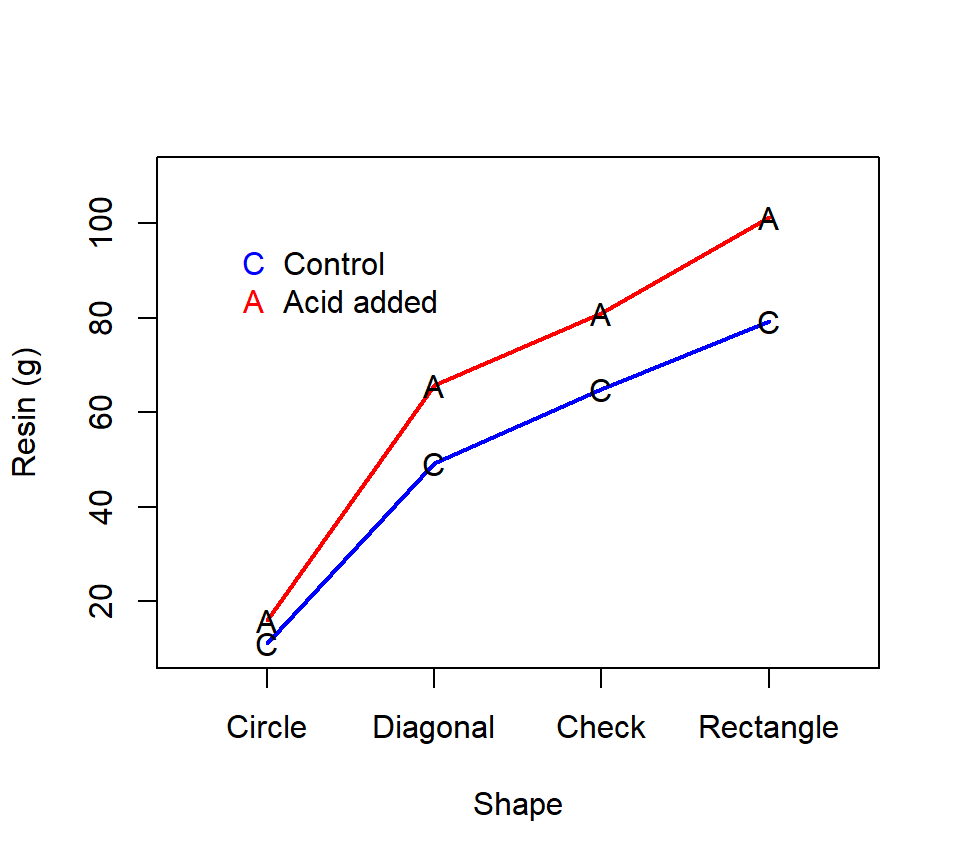
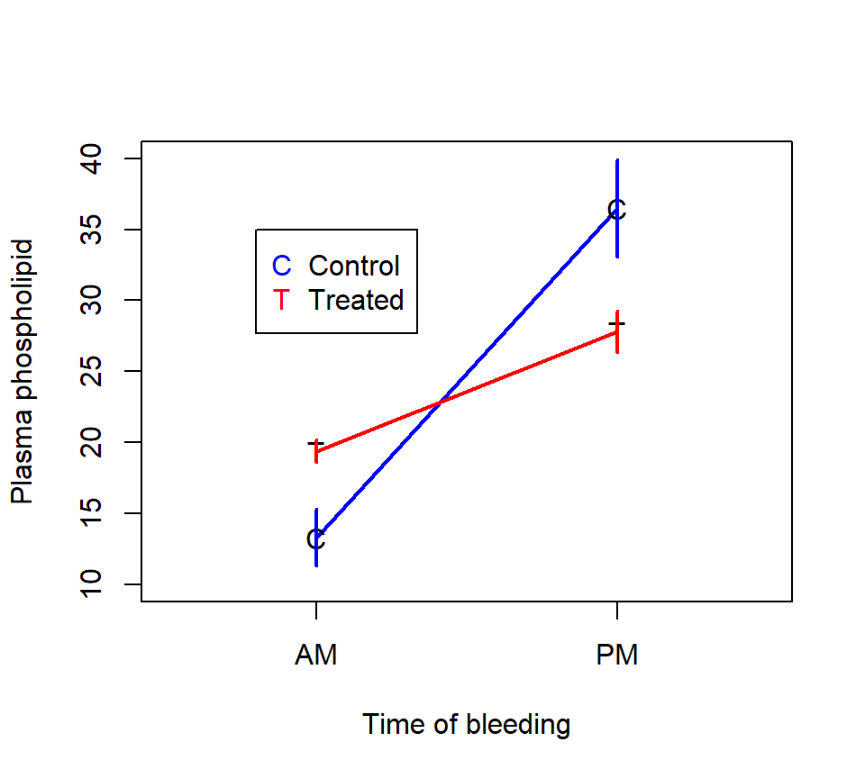
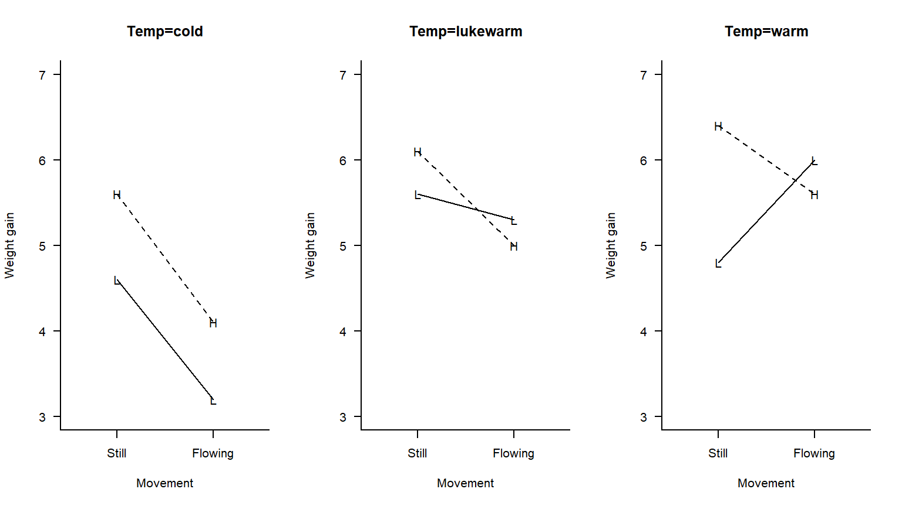

Chapter 6 Factorial experiments
In this section, we consider experiments where the treatment structure involves multiple experimental factors.
6.1 Crossed vs. nested designs
Consider the following two experiments
Experiment 1. (A hypothetical experiment based on example 15.8 in Ott & Longnecker):
A citrus orchard contains 3 different varieties of citrus trees. Eight trees of each variety are randomly selected from the orchard. Four different pesticides are randomly assigned to two trees of each variety and applied according to recommended levels. The same four pesticides are used for each variety. Yields of fruit (in bushels per tree) are recorded at the end of the growing season.
Experiment 2. A study is conducted to investigate the effect of pest management practices on cotton in the central valley of California. 14 ranches are available for study. Each of the 14 ranches is managed by one consultant.
In both experiments, there are two experimental factors — variety and pesticide in experiment 1, and consultant and ranch in experiment 2. Each unique combination of factors forms a separate treatment combination. In experiment 1, the treatment combinations are formed by crossing the two experimental factors. That is to say, every level of the first factor (variety) is combined with every level of the second factor (pesticide). This is an example of a factorial or crossed design. In experiment 2, each level of one factor (ranch) is only combined with one single level of the other factor (consultant). This is an example of a hierarchical design, and we would say that ranch is nested within the consultant.
The treatment structure in experiment 1 above could be alternatively called a two-factor classification, or a two-way factorial treatment structure, or a 4 x 3 factorial treatment structure. Generically, we will call the two factors in a two-way factorial design factors “A” and “B”.
The scientific questions of most interest in a two-factor design are:
Is there evidence of an effect of factor A on the response?
Is there evidence of an effect of factor B on the response?
Is there evidence that the effect of factor A depends on the level of factor B, and vice versa? That is to say, is there evidence of an interaction between the two factors?
6.2 Simple effects, main effects, and interaction effects
In a factorial experiment, we typically analyze three types of effects: simple effects, main effects and interaction effects. We can illustrate these effects with the following hypothetical experiment: A food scientist wants to know how the shelf-life of a product is affected by the temperature at which the product is packed (low vs. high temperature) and the wrapping material (foil vs. plastic). They conduct a balanced 2 x 2 factorial experiment to investigate the effect of temperature and wrapping material on shelf life.
In notation, let temperature be factor “A”, and let \(i\) be an index that distinguishes the two temperatures. That is, let \(i = 1\) indicate low temperature and \(i = 2\) indicate high temperature. Let material be factor “B”, and let \(j\) be an index that distinguishes the two materials. That is, let \(j = 1\) indicate foil and \(j = 2\) indicate plastic.
Suppose for a moment that we actually know what the actual means (in units of days) are for each treatment combination. (Remember, in real life the means for each treatment combination are parameters that have to be estimated.) Let \(\mu_{ij}\) denote the true mean response for the treatment combination formed by temperature \(i\) and material \(j\). Each of the four means above are called cell means, because they provide the average response for each ‘cell’ in the factorial table. More generally, cell means are the average response for each unique treatment combination.
In addition to cell means, we can define marginal means as the averages of cell means. That is, the marginal mean for level \(i\) of factor A is the average of each of the cell means associated with level \(i\), where the average is taken over all the levels of factor B. In a 2 \(\times\) 2 design, the two marginal means for factor A are \[ \bar{\mu}_{1+} =\frac{\mu_{11} +\mu_{12} }{2} \] and \[ \bar{\mu}_{2+} =\frac{\mu_{21} +\mu_{22} }{2}. \]
Similarly, we can define the marginal means for each level \(j\) of factor B as the average of each of the cell means associated with level \(j\), averaging over the levels of factor A. In the 2 \(\times\) 2 design, the marginal means associated with factor B are \[ \bar{\mu}_{+1} =\frac{\mu_{11} +\mu_{21} }{2} \] and \[ \bar{\mu}_{+2} =\frac{\mu_{12} +\mu_{22} }{2}. \]
Marginal means take their name because they are found by marginalizing over the level(s) of the other factor(s). In a two-factor design, we might think about locating the marginal means in the margins of the table of cell means:
Finally, we can define the grand mean as the average of marginal means. In a 2 \(\times\) 2 design, \[ \bar{\mu}_{++} =\frac{\bar{\mu}_{1+} +\bar{\mu}_{2+} }{2} =\frac{\bar{\mu}_{+1} +\bar{\mu}_{+2} }{2} \] Sometimes the grand mean is placed in the lower right-hand corner of the table of cell means:
Let’s visualize the structure of these cell means with an interaction plot. (Other authors call these profile plots.) To construct an interaction plot, write the levels of one factor along the horizontal axis, and use the vertical axis to denote the response. Draw lines on the plot for each level of the other experimental factor. Two possible interaction plots for the above means are: 
Note that regardless of which factor we choose to place on the horizontal axis, the lines above are parallel. This indicates that the effects of the two factors do not depend on one another. When the effects of two (or more) factors do not depend on one another, we say that the effects of those factors are additive.
We can also express this idea mathematically. The simple-effects comparisons (or just simple effects) for a factor describe the differences among cell means associated with that factor at a single level of the other factor(s). In a 2 \(\times\) 2 factorial design, simple effects can be expressed as simple differences. For example, to calculate the simple effect of temperature on food products wrapped in foil, simply calculate the difference \(\mu_{21} -\mu_{11} =3-2=1\). This difference means that for food products wrapped in foil, products packed at high temperature last 1 day longer than products wrapped at low temperature.
Similarly, we could calculate:
The simple effect of temperature on food products wrapped in plastic: \[\mu_{22} -\mu_{12} =5-4=1\]
The simple effect of material on food products packed at low temperatures: \[\mu_{12} -\mu_{11} =4-2=2\]
The simple effect of material at food products packed at high temperatures: \[\mu_{22} -\mu_{21} =5-3=2\]
In this case, the effect of temperature on shelf life does not depend on the type of material in which the food was wrapped. Similarly, the effect of material does not depend on the temperature at which the food was packed. This is a more precise expression of what we mean when we say that the effects of each factor do not depend on one another.
We can also define main-effects comparisons (or just main effects) for each experimental factor. Main effects describe differences among the marginal means associated with each level of an experimental factor. In a 2 \(\times\) 2 design, main effects can be expressed as simple differences. In the example above, we could quantify the main effect of temperature as the difference \[\bar{\mu}_{2+} -\bar{\mu}_{1+} =4-3=1.\] Similarly, we can quantify the main effect of material as the difference \[\bar{\mu}_{+2} -\bar{\mu}_{+1} =4.5-2.5=2.\] With a little algebra, it can also be shown that main effects are equal to averages of simple effects. That is, in the example above, the main effect of temperature is equal to the average of the simple effect of temperature for foods wrapped in foil, and the simple effect of temperature for foods wrapped in plastic. Whether you prefer to think about main effects as differences among marginal means or as averages of simple effect is up to you — both interpretations work equally well.
Now, suppose that instead the means for each treatment combination are
Again, let’s visualize the structure of these means with an interaction plot:

Note that the lines above are no longer parallel. This is a visual indication that the effects of the two factors depend on one another. Or, to put it another way, there is an interaction between the two factors.
Again, we can express this idea mathematically. Let’s repeat the process of measuring the simple effect of each treatment factor: + Simple effect of temperature on food products wrapped in foil: \[\mu_{21} -\mu_{11} =3-2=1\]
Simple effect of temperature on food products wrapped in plastic: \[\mu_{22} -\mu_{12} =6-4=2\]
Simple effect of material on food products packed at low temperatures: \[\mu_{12} -\mu_{11} =4-2=2\]
Simple effect of material at food products packed at high temperatures: \[\mu_{22} -\mu_{21} =6-3=3\]
In this case, the effect of temperature on shelf life depends on the type of material in which the food was wrapped. Similarly, the effect of material depends on the temperature at which the food was packed. We describe this dependence by saying that the treatments interact.
Now, suppose that instead the means for each treatment combination are
Suppose we wanted to quantify the interaction between the treatments in the second example above. We could do so by taking the difference of the simple effects of temperature: \[ \left(\mu_{22} -\mu_{12} \right)-\left(\mu_{21} -\mu_{11} \right)=\left(6-4\right)-\left(3-2\right)=2-1=1 \] Alternatively, we could calculate the difference between the simple effects of material: \[ \left(\mu_{22} -\mu_{21} \right)-\left(\mu_{12} -\mu_{11} \right)=\left(6-3\right)-\left(4-2\right)=3-2=1 \] Each of the above calculations are measures of an interaction effect. In a 2 \(\times\) 2 factorial design, an interaction effect is a ``difference of differences’’, or a measure of how one factor effects the simple effects of the other factor. It is not just coincidence that the two measures of the interaction above produce the same number (=1). In fact, as we will show in a moment, in a 2 \(\times\) 2 factorial design, there is only a single free difference (or degree of freedom) for the interaction effect. Because there is only a single degree of freedom, the two differences of differences above must be equal. (You might also be able to verify this with a little algebra.)
Perhaps the single greatest conceptual pitfall in the analysis of factorial designs is appreciating the difficulty of interpreting main effects when the experimental factors interact. When the two factors in an experiment interact, we can still define main effects mathematically. In the example above, the main effect of temperature is now \[\bar{\mu}_{2+} -\bar{\mu}_{1+} =4.5-3=1.5\] and the main effect of material is now \[\bar{\mu}_{+2} -\bar{\mu}_{+1} =5-2.5=2.5.\] Are these differences meaningful? The answer usually depends on the scientific context of the data. In the presence of an interaction, main effects are only meaningful if it makes sense to average over the levels of an experimental factor. While averaging over the levels of one experimental factor may seem harmless for the (relatively mild) interaction above, consider what might happen with a more severe interaction, such as the one here: 
In this case, the simple effects of temperature are equal and opposite. (High temperature increases shelf life by 3 days for foods packed in foil, but decreases shelf life by 3 days for foods packed in plastic.) Thus, the main effect of temperature is zero! Certainly, it would be erroneous to conclude that temperature has no effect on shelf life based on the fact that the marginal means for the two temperature treatments are equal. In this case, the only way to appropriately characterize the effects of temperature is to consider the simple effects. The main effects are downright misleading.
Thus, the conventional approach to analyzing two-way factorial classifications is to inspect the interaction first. If the interaction is not significant, then analyze main effects. If the interaction is significant, then analyze simple effects. Main effects and simple effects can be analyzed using the same approaches as a one-factor ANOVA (i.e., \(F\)-test for overall effects, followed by linear combinations and/or multiple comparisons procedures if the overall \(F\)-test is significant.)
6.3 Analysis of a balanced 2 \(\times\) 2 factorial experiment
6.3.1 Example: Weight gain in rats
In real life, cell means need to be estimated with data. Consider the following example taken from Sokal and Rohlf (1995). This experiment was designed to examine differences in food consumption among rats. 6 male rats and 6 female rats were used in the experiment. Half the rats were fed fresh lard, and half the rats were fed rancid lard. The response is total food consumption (in grams) over 73 days. This is a 2 \(\times\) 2 factorial design with a CRD. The experiment is balanced.
Here is some notation that we will use for two-factor experiments: + \(a\): number of levels of factor ``A’’ (here, we’ll set ‘sex’ as this factor, so \(a = 2\).)
\(b\): number of levels of factor ``B’’ (here, we’ll set ‘fat’ as this factor, so \(b = 2\).)
\(i = 1, 2, \ldots, a\): an index to distinguish the different levels of factor A (\(i = 1\) for males, \(i = 2\) for females)
\(j = 1, 2, \ldots, b\): an index to distinguish the different levels of factor B (\(j = 1\) for fresh fat, \(j = 2\) for rancid fat)
\(n_{ij}\): sample size for the combination of level \(i\) of factor A and level \(j\) of factor B (in a balanced design, sometimes this gets replaced by \(n\)).
\(k = 1, 2, \ldots, n_{ij}\): an index to distinguish the different observations within each treatment combination
\(y_{ijk}\): \(k\)th observation from the combination of level \(i\) of factor A and level \(j\) of factor B.
\(n_T =\sum _{i=1}^{a}\sum _{j=1}^{b}n_{ij}\) : total sample size
\(\bar{y}_{ij+} =\dfrac{\sum _{k=1}^{n_{ij}} y_{ijk}}{n_{ij}}\): sample mean for the combination of level \(i\) of factor A and level \(j\) of factor B
\(\mu_{ij}\) : unknown population mean for the combination of level \(i\) of factor A and level \(j\) of factor B
First, let’s examine an interaction plot for the sample means in the rat diet data:

We might think that the above plot suggests an interaction, because the lines are not parallel. However, even if there weren’t an interaction, experimental error would probably cause the lines to be non-parallel. Thus, while interaction plots are useful for visualizing the data from a factorial design, they are not suitable for determining statistical significance. Instead, we need a statistical test to determine whether the apparent interaction is statistically significant.
Ina two-factor ANOVA, we can use a sum-of-squares decomposition to test for the statistical significance of the main effects of each factor, and the interaction effects between the factors. (Tests for the statistical significance of the simple effects will require a little more work.) To be explicit, a test for the main effects of factor A is a test of whether the marginal means associated with each level of factor A are equal. That is, we test \(H_0\): \(\bar{\mu}_{1+} =\bar{\mu}_{2+} =...=\bar{\mu}_{a+}\) vs. \(H_a\): at least two marginal means for factor A differ.
Similarly, tests for the main effects of factor B are tests of whether the marginal means associated with each level of factor B are equal: \(H_0\): \(\bar{\mu}_{+1} =\bar{\mu}_{+2} =...=\bar{\mu}_{+b}\) vs. \(H_a\): at least two marginal means for factor B differ.
It is a bit more difficult to write down the specific hypotheses associated with the test of the interaction. Remember that in the absence of an interaction, the effects of the two experimental factors are additive. In mathematical terms, this means that the difference \(\mu_{ij} -\bar{\mu}_{++}\) is equal to sum of the differences \(\bar{\mu}_{i+} -\bar{\mu}_{++}\) and \(\bar{\mu}_{+j} -\bar{\mu}_{++}\). In equations, then, the test for the interaction effects is a test of \[ H_0: \ \ \mu_{ij} -\bar{\mu}_{++} =\bar{\mu}_{+i} -\bar{\mu}_{++} +\bar{\mu}_{+j} -\bar{\mu}_{++}. \]
Just as with a one-factor ANOVA, we can conduct each of these hypothesis tests using a sum-of-squares decomposition. We’ll begin by partitioning the sum-of-squares into sum-of-squares attributable to variation among the treatment groups and variation within the treatment groups: \[\begin{eqnarray*} \mbox{Total variation: } SS_{Total} & = & \sum_{i=1}^{a}\sum_{j=1}^{b}\sum_{k=1}^{n_{ij} }\left(y_{ijk} -\bar{y}_{+++} \right)^2 \\ \mbox{Variation among groups: } SS_{Groups} & = & \sum_{i=1}^{a}\sum_{j=1}^{b}\sum_{k=1}^{n_{ij} }\left(\bar{y}_{ij+} -\bar{y}_{+++} \right)^2 \\ \mbox{Variation within groups: } SS_{Error} & = & \sum_{i=1}^{a}\sum_{j=1}^{b}\sum_{k=1}^{n_{ij} }\left(y_{ijk} -\bar{y}_{ij+} \right)^2 \end{eqnarray*}\]
Now, we will decompose the \(SS_{Groups}\) into three separate SS: one for each of the two main effects, and one for the interaction. Formulas for these sum-of-squares are: \[\begin{eqnarray*} SS[A] & = & \sum_{i=1}^{a}\sum_{j=1}^{b}\sum_{k=1}^{n_{ij} }\left(\bar{y}_{i++} -\bar{y}_{+++} \right)^2 \\ SS[B] & = & \sum_{i=1}^{a}\sum_{j=1}^{b}\sum_{k=1}^{n_{ij} }\left(\bar{y}_{+j+} -\bar{y}_{+++} \right)^2 \\ SS[AB] & = & \sum_{i=1}^{a}\sum_{j=1}^{b}\sum_{k=1}^{n_{ij} }\left(\bar{y}_{ij+} -\bar{y}_{i++} -\bar{y}_{+j+} +\bar{y}_{+++} \right)^2 \end{eqnarray*}\] where SS[AB] denotes the sum-of-squares for the interaction. The formulas for SS[A] and SS[B] should make some sense: they consist of squared differences between the marginal means for one level of an experimental factor and the grand mean. The formula for SS[AB] is a bit more mysterious. Heuristically, the idea is this: with some algebra, the null hypothesis for no interaction \(H_0\): \(\mu_{ij} -\bar{\mu}_{++} =\bar{\mu}_{+i} -\bar{\mu}_{++} +\bar{\mu}_{+j} -\bar{\mu}_{++}\) can be re-written as \(H_0\): \(\mu_{ij} -\bar{\mu}_{+i} -\bar{\mu}_{+j} +\bar{\mu}_{++} =0\). Thus, the term \(\bar{y}_{ij+} -\bar{y}_{i++} -\bar{y}_{+j+} +\bar{y}_{+++}\) measures the extent to which the mean of group \(ij\) departs this null hypothesis.
In a two-way factorial design, when the data are balanced, SS[A], SS[B], and SS[AB] form a perfect decomposition of \(SS_{Groups}\). That is, \[ SS_{Groups} = SS[A] + SS[B] + SS[AB] \] Again, each sum-of-squares is calculated on the basis of a certain number of free differences. To place the sum-of-squares on equal footing, we need to know how these df are partitioned among the sum-of-squares. For a \(a \times b\) factorial design, the number of df used to calculate each sum-of-squares breaks down in the following way:
| source | df |
|---|---|
| Factor A | \(a-1\) |
| Factor B | \(b-1\) |
| A*B interaction | \((a-1)(b-1)\) |
| Error | \(n_T-ab\) |
| Total | \(n_T-1\) |
| source | df |
|---|---|
| Sex | \(1\) |
| Fat | \(1\) |
| Sex*Fat | \(1\) |
| Error | \(8\) |
| Total | \(11\) |
To compare the sum-of-squares on equal footing, we need to calculate mean squares (MS), which are just equal to each sum-of-squares divided by its corresponding df. Here’s a sum-of-squares decomposition for the rat data:
Source df SS MS
Sex 1 3781 3781
Fat 1 61204 61204
Sex*Fat 1 919 919
Error 8 11667 1458
Total 11 77570We can test for the statistical significance of the main effects of Sex and Fat, and for the interaction between Sex and Fat, by computing F-ratios. F-ratios are simply the ratio of the MS for the factor being tested divided by the MS(Error). For example, the F-ratio for the test of the interaction is \[ F = \dfrac{MS[AB]}{MSE} = \dfrac{919}{1458} = 0.63 \] We can calculate a p-value for the test of the null hypothesis that there is no interaction between the factors by comparing this statistic to an \(F\)-distribution with 1 numerator df and 8 denominator df. (The numerator and denominator df are just the number of free differences used to calculate the MS in the numerator and denominator of the \(F\) statistic, respectively.) Because larger values of the \(F\) statistic provide more evidence against the null hypothesis, \(p\)-values associated with the F-test are always one-tailed, and are the probability of observing a test statistic at least as large as the value observed. Here, the probability of observing an \(F\)-statistic with 1 ndf and 8 ddf greater than or equal to 0.63 is \(p=0.45\). The \(p\) value is large, so we have no evidence that the two factors in this experiment interact, with respect to their effect on weight gain.
We can conduct similar calculations to test for the main effects of ‘sex’ and ‘fat’, using MS[A] and MS[B], respectively. We’ll use these values to complete our ANOVA table for the rat example:
Source df SS MS F p
Sex 1 3781 3781 2.59 0.1460
Fat 1 61204 61204 42.0 0.0002
Sex*Fat 1 919 919 0.63 0.4503
Error 8 11667 1458
Total 11 77570Thus, there is no evidence of an interaction between the factors. Proceeding with an analysis of the main effects, there is no evidence that the marginal means for male vs. female rates differ (\(p=0.146\)), but there is strong evidence that the marginal means between fresh vs. rancid fat differ (\(p = 0.0002\)).
Because the main effect of ‘fat’ is significant, we want to go further and say more about the sign and magnitude of this effect. To do so, we’ll form a contrast that quantifies the main effect of fat.
\[
\theta _{fat} =\bar{\mu}_{+2} -\bar{\mu}_{+1} =\frac{\mu_{12} +\mu_{22} }{2} -\frac{\mu_{11} +\mu_{21} }{2}
\]
We’ve written this contrast as the difference between the marginal mean for rancid fat and the marginal mean for fresh fat. Thus, a positive value corresponds to rats gaining more weight when fed rancid fat, and a negative value corresponds to rats gaining more weight when fed fresh fat. We first estimate the linear combination simply by plugging in sample means:
\[
{\hat{\theta }_{fat} =\dfrac{\bar{y}_{12+} +\bar{y}_{22+} }{2} -\dfrac{\bar{y}_{11+} +\bar{y}_{21+} }{2} } {=\dfrac{535+517}{2} -\dfrac{696+643}{2} } {=-143}
\]
Thus, we estimate that rats fed rancid fat gain 143g less weight than rats fed fresh fat. Next, we estimate the standard error of this linear combination using a modification of the formula from linear combinations for one-factor ANOVA:
\[\begin{eqnarray*}
s_{\hat{\theta}} & = & \sqrt{\left\{\frac{c_{11}^2}{n_{11}} +\frac{c_{12}^2}{n_{12}} +\frac{c_{21}^2}{n_{21}} +\frac{c_{22}^2}{n_{22}} \right\} MS_{Error} } \\
& = & \sqrt{\left\{\frac{\left(-1/2\right)^2 }{3} +\frac{\left(1/2\right)^2 }{3} +\frac{\left(-1/2\right)^2 }{3} +\frac{\left(1/2\right)^2 }{3} \right\}1458} \\
& = & 22.0
\end{eqnarray*}\]
Finally, if we wanted a 95% CI for this linear combination, we could form one by taking the appropriate critical values from a t-distribution with 8 df. (Here, 8 df because the MSE is calculated based on 8 df). Here, the appropriate critical value is 2.306, so a 95% CI for the main effect of fat is -143g \(\pm\) 2.306 \(\times\) 22.0g = (-92g, -194g).
6.3.2 Analysis using PROC GLM in SAS
We can have SAS do these calculations for us. In PROC GLM, we can obtain these calculations with the code:
proc glm data=rat;
class trt sex fat;
model food = sex fat sex*fat;
run;Edited output:
Sum of
Source DF Squares Mean Square F Value Pr > F
Model 3 65903.58333 21967.86111 15.06 0.0012
Error 8 11666.66667 1458.33333
Corrected Total 11 77570.25000
Source DF Type III SS Mean Square F Value Pr > F
sex 1 3780.75000 3780.75000 2.59 0.1460
fat 1 61204.08333 61204.08333 41.97 0.0002
sex*fat 1 918.75000 918.75000 0.63 0.4503Let’s note the following:
- In the model statement, we can use a vertical bar as shorthand for including both main effects and interactions. The code below would produce identical output to the code above:
proc glm data=rat;
class trt sex fat;
model food = sex|fat;
run;PROC GLM provides two tables. The first is the sum-of-squares breakdown and associated ANOVA F-test if we were just treating the data as a one-factor ANOVA. That is, the \(F\)-test in the first table is a test of \(H_0\): \(\mu_{11} =\mu_{12} =\mu_{21} =...=\mu_{ab}\). (This is equivalent to a model-utility test in multiple regression.) The second table of output provides \(F\)-tests for the main and interaction effects.
PROC GLM provides two sum-of-squares decompositions, one which it calls Type I and another which it calls Type III. Type I and Type III sum-of-squares are identical for balanced factorial designs. They are not identical for unbalanced designs. We will discuss the differences for unbalanced designs later.
We can also have PROC GLM calculate linear combinations of cell means for us. To do so, though, we need to understand the effects-model coding that PROC GLM uses to represent the two-factor ANOVA model.
6.3.3 Effects notation for the two-factor ANOVA
For a two-factor ANOVA, we extend our effects-model notation in the following way: \[ \mu_{ij} =\mu +\alpha_i +\beta_j +\left(\alpha \beta \right)_{ij} \] Here, \(\mu\) is the reference level, \(\alpha_i\) is the “effect” of level \(i\) of factor A, \(\beta_j\) is the “effect” of level \(j\) of factor B, and \(\left(\alpha \beta \right)_{ij}\) is the interaction between level \(i\) of factor A and level \(j\) of factor B. In one-factor ANOVA, we saw that it was not possible to estimate all the \(\alpha_i\)’s uniquely, so we had to impose a constraint. A similar phenomenon prevails in the two-factor model. How many constraints do we need? The key equivalence is that the number of effects parameters that we can estimate is equal to the number of df for each effect in the df accounting.
Again, PROC GLM uses set-to-zero constraints. We can see the constraints by calling for SAS’s parameter estimates with the SOLUTION option to the MODEL statement in PROC GLM:
proc glm data=rat;
class trt sex fat;
model food = sex|fat / solution;
run;
The GLM Procedure
Standard
Parameter Estimate Error t Value Pr > |t|
Intercept 535.3333333 B 22.04792759 24.28 <.0001
sex female -18.0000000 B 31.18047822 -0.58 0.5796
sex male 0.0000000 B . . .
fat fresh 160.3333333 B 31.18047822 5.14 0.0009
fat rancid 0.0000000 B . . .
sex*fat female fresh -35.0000000 B 44.09585518 -0.79 0.4503
sex*fat female rancid 0.0000000 B . . .
sex*fat male fresh 0.0000000 B . . .
sex*fat male rancid 0.0000000 B . . .
NOTE: The X'X matrix has been found to be singular, and a generalized inverse was used to
solve the normal equations. Terms whose estimates are followed by the letter 'B'
are not uniquely estimable.Now, to calculate the main effect of fat using SAS, we have to recode our linear combination in terms of the parameters in the effects model. Here goes: \[\begin{eqnarray*} \theta _{fat} & = & \frac{1}{2} \left(\mu_{12} +\mu_{22} -\mu_{11} -\mu_{21} \right) \\ & = & \frac{1}{2} \left(\mu +\alpha _{1} +\beta _{2} +\left(\alpha \beta \right)_{12} +\mu +\alpha _{2} +\beta _{2} +\left(\alpha \beta \right)_{22} -\mu -\alpha _{1} -\beta _{1} -\left(\alpha \beta \right)_{11} -\mu -\alpha _{2} -\beta _{1} -\left(\alpha \beta \right)_{21} \right) \\ & = & \frac{1}{2} \left(2\beta _{2} +\left(\alpha \beta \right)_{12} +\left(\alpha \beta \right)_{22} -2\beta _{1} -\left(\alpha \beta \right)_{11} -\left(\alpha \beta \right)_{21} \right) \\ & = & -\beta _{1} +\beta _{2} -\frac{1}{2} \left(\alpha \beta \right)_{11} +\frac{1}{2} \left(\alpha \beta \right)_{12} -\frac{1}{2} \left(\alpha \beta \right)_{21} +\frac{1}{2} \left(\alpha \beta \right)_{22} \end{eqnarray*}\] Now we can read off the coefficients from the last line of the expression above and feed them into an ESTIMATE statement. Note that this combination only involves parameters for the ‘fat’ effect and the interaction:
proc glm data=rat;
class trt sex fat;
model food = sex|fat;
estimate 'Fresh v. rancid' fat -1 1 sex*fat -.5 .5 -.5 .5;
run;
Parameter Estimate Standard Error t Value Pr > |t|
Fresh v. rancid -142.833333 22.0479276 -6.48 0.0002As always, SAS provides (for free) a p-value for the test of \(H_0\): \(\theta =0\) vs. \(H_a\): \(\theta \ne 0\). For illustration’s sake, we can also write linear combinations for the main effect of sex, and for the interaction effect. One way to write these linear combinations is: \[\theta _{sex} =\frac{\mu_{21} +\mu_{22} }{2} -\frac{\mu_{11} +\mu_{12} }{2} \] and \[\theta _{int} =\left(\mu_{22} -\mu_{12} \right)-\left(\mu_{21} -\mu_{11} \right)\] Using PROC GLM, we estimate these effects as
proc glm data=rat;
class trt sex fat;
model food = trt;
estimate 'Fresh v. rancid' fat -1 1 sex*fat -.5 .5 -.5 .5;
estimate 'Male v. female' sex -1 1 sex*fat -.5 -.5 .5 .5;
estimate 'Interaction' sex*fat 1 -1 -1 1;
run;
Parameter Estimate Standard Error t Value Pr > |t|
Fresh v. rancid -142.833333 22.0479276 -6.48 0.0002
Male v. female -35.500000 22.0479276 -1.61 0.1460
Interaction 35.000000 44.0958552 0.79 0.4503Thus, to summarize our analysis of this experiment: There is no evidence of a statistically significant sex effect. There is strong evidence of an effect of fat on food consumption (\(F_{1,8} = 41.97\), \(p=0.0002\)). Rats fed rancid fat consumed on average 142.9g (s.e. 22.0g) less food than rats fed fresh fat.
Just as with one-factor ANOVA, the effects notation also gives us another way to write the null hypotheses for the main effects and interaction effects. The test of the main effects of factor A is equivalent to a test of \[ H_{0} :\alpha _{1} =\alpha _{2} =...=\alpha _{a} =0. \] The test of the main effects of factor B is equivalent to a test of \[ H_{0} :\beta _{1} =\beta _{2} =...=\beta _{b} =0. \] Finally, the test the interaction between factors A and B is equivalent to a test of \[ H_{0} :\left(\alpha \beta \right)_{11} =\left(\alpha \beta \right)_{12} =...=\left(\alpha \beta \right)_{ab} =0. \]
6.3.4 A second example
This example is taken from Steel, Torrie, and Dickey (1997). In their words,
Wilkinson (1954) reports the results of an experiment to study the influence of time of bleeding and diethylstilbestrol (an estrogenic compound) on plasma phospholipid in lambs. Five lambs were assigned at random to each of four treatment groups; treatment combinations are for morning and afternoon bleeding and with and without diethylstilbestrol treatment.
An interaction plot of the data is shown below. 
Here is the output of a two-factor ANOVA model using PROC GLM:
proc glm data=sheep;
class time drug trt;
model y = time|drug;
run;
Sum of
Source DF Squares Mean Square F Value Pr > F
Model 3 1539.406600 513.135533 21.61 <.0001
Error 16 379.923280 23.745205
Corrected Total 19 1919.329880
Source DF Type III SS Mean Square F Value Pr > F
time 1 1256.746580 1256.746580 52.93 <.0001
drug 1 8.712000 8.712000 0.37 0.5532
time*drug 1 273.948020 273.948020 11.54 0.0037In contrast to the rat example, the interaction here is statistically significant. Because the interaction is significant, the \(F\)-tests of the main effects may no longer have a clear interpretation. Instead, we’ll analyze the simple effects of the two factors by estimating the linear combinations associated with each:
proc glm data=sheep;
class time drug trt;
model y = time|drug;
estimate 'Simple effect of time, drug=no' time 1 -1 time*drug 1 0 -1 0;
estimate 'Simple effect of time, drug=yes' time 1 -1 time*drug 0 1 0 -1;
estimate 'Simple effect of drug, time=AM' drug -1 1 time*drug -1 1 0 0;
estimate 'Simple effect of drug, time=PM' drug -1 1 time*drug 0 0 -1 1;
run;
Parameter Estimate Error t Value Pr > |t|
Simple effect of time, drug=no -23.2560000 3.08189585 -7.55 <.0001
Simple effect of time, drug=yes -8.4520000 3.08189585 -2.74 0.0145
Simple effect of drug, time=AM 6.0820000 3.08189585 1.97 0.0660
Simple effect of drug, time=PM -8.7220000 3.08189585 -2.83 0.0121Here is a partial interpretation of these contrasts. Sheep with blood drawn in the afternoon have more plasma phospholipid than sheep with blood drawn in the morning, regardless of whether the sheep were given the drug. However, the magnitude of the effect of timing is smaller on sheep given the drug (estimated effect = 8.5 units, s.e. = 3.1) than it is on sheep not given the drug (estimated effect = 23.3 units, s.e.=3.1). For sheep with blood drawn in the afternoon, the drug decreases plasma phospholipid relative to the control (estimated effect = 8.7 units less with the drug, s.e. = 3.1). For sheep with blood drawn in the morning, there is only weak evidence that the drug has an effect on plasma phospholipid (estimated effect = 6.1 units more with the drug, s.e. = 3.1, \(p=0.066\)).
6.4 \(a \times b\) factorial designs
6.4.1 Example without a significant interaction
Oehlert (problem 8.5) reports the following data. Low and Bin Mohd. Ali (1985) studied the collection of pine oleoresin by tapping the trunks of pine trees. Tapping involves cutting a hole in the tree trunk and collecting resin that seeps out. This experiment compared four shapes of holes (circle, diagonal, check, or rectangle) and the efficacy of acid (added vs. control) in collecting resin. Twenty-four pine trees were selected from a plantation and were randomly assigned to each of the 8 possible combinations of hole shape and acid. The response is total grams of resin collected from the hole. The data that we will work with are not the actual data but are instead a hypothetical data set for the same design. This is a balanced, replicated 4 \(\times\) 2 factorial experiment with treatment combinations assigned in a CRD. We’ll extend our ideas from the analysis of the 2 \(\times\) 2 factorial experiments to this 4 \(\times\) 2 factorial experiment. First, visualize the effects of the two factors with an interaction plot: Our notation here will be similar to the 2 \(\times\) 2 factorial design, except that now we’ll allow an arbitrary number of levels for the two crossed experimental factors. Our strategy for analyzing data from a \(a \times b\) factorial design will still be to use a sum-of-squares decomposition to test for interaction effects and/or main effects of the two factors. As with a 2 \(\times\) 2 design, when the data are balanced, the sum-of-squares for the groups can be exactly partitioned into the three components using the formulas that we introduced before:
\[
SS_{Groups} = SS[A] + SS[B] + SS[AB]
\]
For the oleoresin data, this decomposition is
Our notation here will be similar to the 2 \(\times\) 2 factorial design, except that now we’ll allow an arbitrary number of levels for the two crossed experimental factors. Our strategy for analyzing data from a \(a \times b\) factorial design will still be to use a sum-of-squares decomposition to test for interaction effects and/or main effects of the two factors. As with a 2 \(\times\) 2 design, when the data are balanced, the sum-of-squares for the groups can be exactly partitioned into the three components using the formulas that we introduced before:
\[
SS_{Groups} = SS[A] + SS[B] + SS[AB]
\]
For the oleoresin data, this decomposition is
| source | df | SS |
|---|---|---|
| Shape | 3 | 19407 |
| Acid | 1 | 1305 |
| Shape*Acid | 3 | 237 |
| Error | 16 | 721 |
| Total | 23 | 21672 |
| source | df | SS | MS | \(F\) | \(p\) |
|---|---|---|---|---|---|
| Shape | 3 | 19407 | 6469 | 143.5 | <0.0001 |
| Acid | 1 | 1305 | 1305 | 29 | <0.0001 |
| Shape*Acid | 3 | 237 | 79.2 | 1.76 | 0.1961 |
| Error | 16 | 721 | 45.1 | ||
| Total | 23 | 21672 |
Thus, this two-factor ANOVA shows that there is no statistical evidence of an interaction (\(F_{3, 16} = 1.76\), \(p = 0.20\)). Because the interaction is not significant, it makes sense to analyze main effects. There is very strong evidence of a main effect of shape (\(F_{3, 16} = 143.5\), \(p < 0.0001\)) and a main effect of the acid treatment (\(F_{1, 16}\) = 29.0, \(p < 0.0001\)).
6.4.1.1 Linear contrasts and multiple comparisons in the \(a \times b\) design
Because the main effects are significant (and the interaction is not significant), then we can use linear contrasts and multiple comparisons procedures to analyze the marginal means of both factors just as we would in a one-factor layout. We’ll illustrate both here for completeness, although the concepts should be familiar.
Example of a linear contrast: Suppose that we wanted to ask if the average amount of resin collected from circular holes was different from the average resin collected from diagonal holes. We can first define a linear contrast that quantifies the difference between these two marginal means: \[ \theta =\frac{\mu_{11} +\mu_{12} }{2} -\frac{\mu_{21} +\mu_{22} }{2} \] Using all of our formulas from before, we could estimate this linear combination by plugging in sample means. We could then estimate the standard error, and use the estimate and the standard error to test \(H_{0} :\theta =0\) vs. \(H_{a} :\theta \ne 0\). To coerce SAS to do this for us, we need to do algebra with the effects parameters: \[\begin{eqnarray*} \theta & = & \frac{\mu_{11} +\mu_{12} }{2} -\frac{\mu_{21} +\mu_{22} }{2} \\ & = & \frac{\left(\mu +\alpha _{1} +\beta _{1} +\left(\alpha \beta \right)_{11} \right)+...}{2} -\frac{\left(\mu +\alpha _{2} +\beta _{1} +\left(\alpha \beta \right)_{21} \right)+...}{2} \\ & = & \alpha _{1} -\alpha _{2} +\frac{\left(\alpha \beta \right)_{11} +\left(\alpha \beta \right)_{12} }{2} -\frac{\left(\alpha \beta \right)_{21} +\left(\alpha \beta \right)_{22} }{2} \end{eqnarray*}\] Thus, in SAS:
proc glm data=resin;
class shape acid;
model resin = shape acid shape*acid / solution;
estimate 'Circle vs. Diagonal' shape 0 1 -1 0 shape*acid 0 0 .5 .5 -.5 -.5 0 0;
run;
Standard
Parameter Estimate Error t Value Pr > |t|
Circle vs. Diagonal -43.8333333 3.87656778 -11.31 <.0001Thus, we conclude that there is strong evidence that diagonal holes produce more resin than circular holes.
Notes: 1. PROC GLM orders the levels of experimental factors alphabetically. Thus, the ordering for the shape factor above is check, circle, diagonal, slash. Thus, the zeros are needed in the estimate statement because in SAS’s coding circle corresponds to \(i=2\) and diagonal corresponds to \(i=3\).
- Also, if any of the coefficients have a training string of zeros, we can omit those from the ESTIMATE statement. SAS will replace any missing coefficients with zeros. The above ESTIMATE statement could have been equivalently written as
estimate 'Circle vs. Diagonal' shape 0 1 -1 shape*acid 0 0 .5 .5 -.5 -.5;Alternatively, we could use a MEANS statement to compare treatment means using multiple comparisons. Here is code for a Tukey’s HSD comparison of the marginal means for the hole shapes:
proc glm data=resin;
class shape acid;
model resin = shape acid shape*acid;
means shape / tukey;
run;
Tukey's Studentized Range (HSD) Test for resin
Means with the same letter are not significantly different.
Tukey
Grouping Mean N shape
A 90.333 6 rectangl
B 73.000 6 check
C 57.500 6 diagonal
D 13.667 6 circularThus, all of the shapes are significantly different from one another.
6.4.2 Example with a significant interaction
Here’s a second example of a \(a \times b\) factorial design where the interaction is significant (based off of exercise 15.24 in Ott and Longnecker (2015)): An experiment was performed to compare the effect of soil pH and calcium additives on trunk diameters of orange trees. 36 trees were selected at random from an orange grove. Experimental treatments were arranged in a factorial design, with 4 levels of soil pH and 3 levels of calcium supplement. Treatment combinations were assigned to trees at random in a balanced CRD, with three trees per treatment combination.
 Here is a two-factor ANOVA analysis in SAS:
proc glm data=orange;
class pH calcium;
model diameter = pH calcium pH*calcium;
run;
The GLM Procedure
Dependent Variable: diameter
Sum of
Source DF Squares Mean Square F Value Pr > F
Model 11 9.18305556 0.83482323 12.32 <.0001
Error 24 1.62666667 0.06777778
Corrected Total 35 10.80972222
Source DF Type III SS Mean Square F Value Pr > F
pH 3 4.46083333 1.48694444 21.94 <.0001
calcium 2 1.46722222 0.73361111 10.82 0.0004
pH*calcium 6 3.25500000 0.54250000 8.00 <.0001There is strong evidence of an interaction. Because of the significant interaction, we analyze simple effects. There are multiple ways to analyze simple effects. With more than two levels of each factor, we might consider \(F\)-tests of the cell means associated with each level of one of the two factors. For example, we could ask whether the responses differ among the pH levels when calcium = 100. That is, we could test \[ H_0: \ \ \mu_{11} =\mu_{21} =\ldots =\mu_{41}. \] More generally, we can test for equality across the levels of factor A for each level of factor B: \[ H_0: \ \ \mu_{1j} =\mu_{2j} = \ldots =\mu_{aj}. \] We can also test for equality across the levels of factor B for each level of factor A: \[ H_0: \ \ \mu_{i1} =\mu_{i2} =...=\mu_{ib}. \] These tests are implemented in SAS using the SLICE option of the LSMEANS statement. (Note: LSMEANS calculates the Least Squares Means of each treatment level. LSMEANS and MEANS coincide for balanced data, but only LSMEANS has the SLICE option implemented.)
proc glm data=orange;
class pH calcium;
model diameter = pH calcium pH*calcium;
lsmeans pH*calcium / slice=pH slice=calcium;
run;
pH*calcium Effect Sliced by pH for diameter
Sum of
pH DF Squares Mean Square F Value Pr > F
4 2 3.606667 1.803333 26.61 <.0001
5 2 0.008889 0.004444 0.07 0.9367
6 2 0.326667 0.163333 2.41 0.1112
7 2 0.780000 0.390000 5.75 0.0091
Sum of
calcium DF Squares Mean Square F Value Pr > F
100 3 5.382500 1.794167 26.47 <.0001
200 3 0.446667 0.148889 2.20 0.1146
300 3 1.886667 0.628889 9.28 0.0003The first table above tests for differences among the calcium levels within each of the 4 pH levels. This table shows that there are significant differences between calcium levels for pH=4 and pH=7, but not for pH=5 or pH=6. The second table shows tests for differences between the pH levels within each of the three calcium levels. This table shows that there are significant differences between the pH levels when calcium=100 and when calcium=300, but not when calcium=200.
We could then explore each of the significant differences above in more depth by using linear contrast or multiple comparisons. For example, suppose we wanted to compare calcium=200 vs. calcium=100 when pH=4. We define a suitable linear contrast as \[ \theta =\mu_{11} -\mu_{12} \] and estimate it in SAS by figuring out the appropriate effects parameters: \[\begin{eqnarray*} \theta & = & \mu_{11} -\mu_{12} \\ & = & \left( \mu + \alpha_1 + \beta_1 + (\alpha \beta)_{11} \right) - \left( \mu + \alpha_1 + \beta_2 + (\alpha \beta)_{12} \right) \\ & = & \beta_1 - \beta_2 + (\alpha \beta)_{11} - (\alpha \beta)_{12} \end{eqnarray*}\]
proc glm data=orange;
class pH calcium;
model diameter = pH calcium pH*calcium;
estimate 'Ca100 vs Ca200 when pH=4' calcium 1 -1 pH*calcium 1 -1;
run;
Standard
Parameter Estimate Error t Value Pr > |t|
Ca100 vs Ca200 when pH=4 -1.53333333 0.21256807 -7.21 <.00016.5 Unreplicated factorial designs
Consider an experiment with 5 levels of factor A, 3 levels of factor B, and a single observation for each treatment combination. This is called an unreplicated design because there is only a single replicate for each treatment combination. Let’s try a df accounting for a model that includes main effects of both factors and an interaction:| source | df |
|---|---|
| Factor A | 4 |
| Factor B | 2 |
| A*B interaction | 8 |
| Error | 0 |
| Total | 14 |
This model has no df remaining to estimate the experimental error. Consequently, we cannot estimate \(MS_{Error}\) and hence we cannot conduct \(F\)-tests of the treatment effects.
One option with unreplicated designs is to assume that there is no interaction between the two experimental factors. A model without an interaction is called an additive model. In effects notation, the model is: \[ y_{ijk} =\mu +\alpha_i +\beta_j +\varepsilon _{ijk} \] With an additive model, we use the df that had been allocated to the interaction to estimate the experimental error instead:| source | df |
|---|---|
| Factor A | 4 |
| Factor B | 2 |
| Error | 8 |
| Total | 14 |
The additive model can be used to test for effects of factors A and B. Obviously, these tests are only trustworthy if the assumption of no interactions is appropriate. In biology, it is usually risky to assume that there are no interactions between experimental factors. Additive models for unreplicated designs are more common in industrial statistics.
John Tukey developed a test for additivity with unreplicated factorial designs, sometimes called Tukey’s single degree-of-freedom test. We will not cover Tukey’s test in ST512, although you may want to read about it on your own if you need to analyze an unreplicated factorial design in your own research.
6.6 Missing cells
An extreme case of unbalanced data occurs when there are no observations for one or more treatment combinations. For example, consider the sheep data used to illustrate an interaction in a 2 \(\times\) 2 factorial design, but suppose that there were no data for control sheep bled in the morning. We say that the ``cell’’ representing the treatment combination of control x morning bleeding is missing.
There are three options for missing cells designs:
Remove one of the levels of one experimental factor to eliminate the missing cell. In the example above, we could eliminate the data from the drugged sheep bled in the morning, and just compare the sheep bled in the afternoon to look for a simple effect of drug vs. control. Or, we could eliminate the data from the control sheep bled in the afternoon, and just look for a simple effect of morning vs. afternoon bleeding for sheep given the drug.
Treat the design as a one-factor layout, where each treatment combination is a separate level of the single experimental factor.
Use an additive model.
6.7 More than two factors
All of these ideas can be extended to factorial experiments with more than two factors.
Example (based off of an example in Rao (1998)): An investigator is interested in understanding the effects of water temperature (cold vs. lukewarm vs. warm), light (low vs. high), and water movement (still vs. flowing) on weight gain in fish. She has 24 aquaria to serve as experimental units. Each of the 3 x 2 x 2 = 12 treatment combinations are randomly assigned to 2 of the 24 aqauria, and the average weight gain of the fish in each aquaria is measured. This is a balanced three-way factorial design with a CRD randomization structure.
As a first attempt to get a handle on these data, let’s make three different interaction plots, one for each water temperature:
 The interaction plot suggests that for some water temperatures, there is an interaction between light levels and water movement. Thus, the way in which the effect of light depends on water movement depends in turn on temperature. Yikes! This is a three-factor interaction. We need a test to see if this interaction is statistically significant, or if it can be attributed to experimental error.
The interaction plot suggests that for some water temperatures, there is an interaction between light levels and water movement. Thus, the way in which the effect of light depends on water movement depends in turn on temperature. Yikes! This is a three-factor interaction. We need a test to see if this interaction is statistically significant, or if it can be attributed to experimental error.
To develop notation for the three-factor model, we’ll extend our ideas from two factor models. For example, \(\mu_{ijk}\) will denote the unknown population mean for the combination of level \(i\) of factor A, level \(j\) of factor B, and level \(k\) of factor C.
With three factors, there are two possible types of interactions:
First-order interactions}: Interactions between two factors
Second-order interactions}: Interactions between first-order interactions
For example, in this experiment the first-order interaction between light level and water movement might describes how the effect of light depends on water movement and vice versa. The second-order interaction describes how this first order interaction may in turn depend on water temperature.
Note that the rules for determining the df associated with higher-order interactions are the same as for first-order interactions: the df are always equal to the product of the df associated with each constituent factor. (Think of this in terms of regression with indicator variables again.)
In effects notation, we can write the cell means as \[ \mu_{ijkl} =\mu +\alpha_i +\beta_j +\gamma _{k} +\left(\alpha \beta \right)_{ij} +\left(\alpha \gamma \right)_{ik} +\left(\beta \gamma \right)_{jk} +\left(\alpha \beta \gamma \right)_{ijk} \] Here, the parameters denoted by \(\left(\alpha \beta \gamma \right)_{ijk}\) capture the second-order interaction among the three factors.
proc glm data=fishgrowth;
class light temp movement;
model gain = light|temp|movement;
run;
Example of 3x2x2 factorial from Rao 2
Dependent Variable: gain
Sum of
Source DF Squares Mean Square F Value Pr > F
Model 11 17.94458333 1.63132576 5.60 0.0030
Error 12 3.49500000 0.29125000
Corrected Total 23 21.43958333
Source DF Type III SS Mean Square F Value Pr > F
light 1 2.10041667 2.10041667 7.21 0.0198
temp 2 7.64333333 3.82166667 13.12 0.0010
light*temp 2 0.64333333 0.32166667 1.10 0.3629
movement 1 2.47041667 2.47041667 8.48 0.0130
light*movement 1 1.35375000 1.35375000 4.65 0.0521
temp*movement 2 2.89333333 1.44666667 4.97 0.0268
light*temp*movement 2 0.84000000 0.42000000 1.44 0.2746The analysis strategy with a three-way factorial design is similar to the analysis strategy with a two-way factorial design:
Test for the significance of the second-order interaction.
If the second-order interaction is significant, either unpack the factorial treatment structure and treat the design a one-factor ANOVA, or ``divide and conquer’’ by analyzing the effects of two factors at each level of the third factor.
If the second-order interaction is not significant, you may remove the second-order interaction and re-fit the model, although this is not necessary. Test for the significance of the first-order interactions. If any of the first-order interactions are significant, analyze simple effects. If none of the first-order interactions are significant, analyze main effects.
In the example above, the second-order interaction is not statistically significant (\(F_{2, 12} = 1.44\), \(p = 0.27\)). The only statistically significant first-order interaction is the interaction between water temperature and movement (\(F_{2,12} = 4.97\), \(p = 0.027\)). Neither of the first-order interactions involving light are statistically significant (although the light-by-movement interaction is on the border of statistical significance, \(F_{1,12} = 4.65\), \(p = 0.052\)). The main effect of light is statistically significant (\(F_{1,12} = 7.21\), \(p = 0.020\)). We could then proceed by quantifying the main effect of light with a linear combination, and quantifying the simple effects of movement at different water temperatures.
Main effect of light: \[\theta _{light} =\bar{\mu}_{1++} -\bar{\mu}_{2++} \] Simple effect of movement when temperature = cold: \[\theta _{m/C} =\bar{\mu}_{+11} -\bar{\mu}_{+12} \] Simple effect of movement when temperature = lukewarm: \[\theta _{m/L} =\bar{\mu}_{+21} -\bar{\mu}_{+22} \] Simple effect of movement when temperature = warm: \[\theta _{m/W} =\bar{\mu}_{+31} -\bar{\mu}_{+32} \]
A final note: unreplicated three-way factorial designs are not uncommon in the life sciences. To analyze these designs, one typically assumes that there is no second-order interaction, and uses the df that would have been absorbed by the second-order interaction as the df for error. Some will argue that higher-order interactions are rare in nature, and thus assuming that they do not occur is justified. Whether you agree with this or view it as a just-so rationalization is up to you.